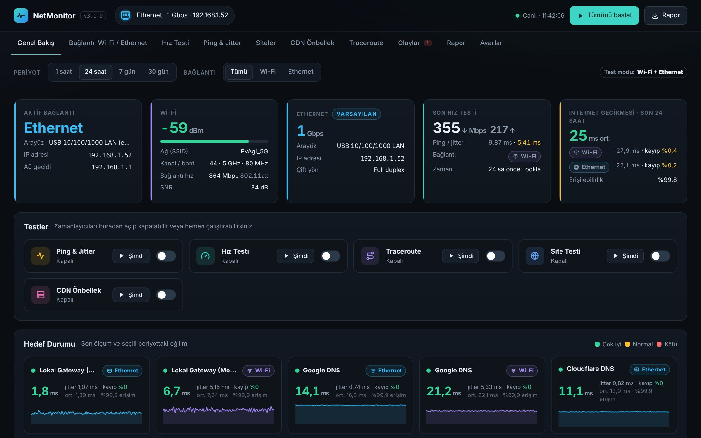

Ping, jitter, paket kaybı, hız testi, site ve DNS süreleri, CDN önbellekleri ve traceroute — Wi-Fi ve Ethernet için ayrı ayrı, arka planda, sizin bilgisayarınızda.
Tek seferlik testler sorunu yakalamaz. NetMonitor saatlerce, günlerce ölçer; sorunun ne zaman, hangi bağlantıda ve nerede başladığını gösterir.
Tarayıcıda açılan yerel bir panel. Telefonunuzdan da izleyebilirsiniz.

Komut uygulamayı indirir, kurar ve açar. Aynı komut mevcut kurulumu ayarlarınızı ve verilerinizi koruyarak günceller.
İki bağlantıyı da takın, Ayarlar → Test Bağlantısı'ndan İkisi birden · Karşılaştır'ı seçin. Her ölçüm iki arayüz üzerinden ayrı ayrı yapılır ve Bağlantı sekmesinde yan yana gösterilir.
Yeni macOS ve Windows sürümleri ağ adını konum izni olmadan gizler; sinyal gücü, kanal ve hız yine ölçülür. macOS: Sistem Ayarları → Gizlilik ve Güvenlik → Konum Servisleri'nden Terminal'e izin verin. Windows: Ayarlar → Gizlilik → Konum.
Tüm zamanlayıcıları kapatır, çalışan ölçümleri keser ve başlattığınız andan durdurduğunuz ana kadarki oturumun raporunu otomatik açar. Rapor PDF, Excel ve CSV olarak indirilebilir.
YouTube, Facebook ve Instagram'ın size atadığı medya sunucularını bulur. Sunucu internet sağlayıcınızın ağındaysa "ISS içi önbellek" olarak işaretlenir; gecikme, kayıp ve indirme hızı ölçülür.
Uygulama açılışta ve 12 saatte bir yeni sürümü kontrol eder. Yeni sürüm varsa üst çubukta bildirim çıkar; Güncelle ile indirilir, SHA-256 ile doğrulanır ve kurulur. Ayarlar ve veriler korunur.
Evet. Bilgisayarda baslat.command --lan (Windows: baslat.bat --lan) ile başlatın ve aynı ağdaki telefondan http://bilgisayarın-IP'si:8000 adresini açın. Ölçümler bilgisayarın bağlantısı üzerinden yapılır.
Ayarlar → Veri Yönetimi'nden belirli gün sayısından eski kayıtları veya tüm geçmişi silebilirsiniz. Silmeden önce otomatik yedek alınır.